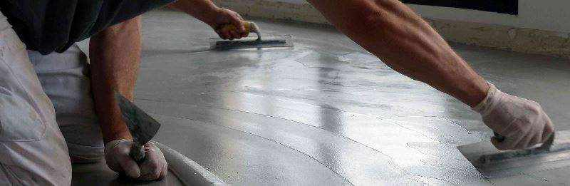

Microcemento sin problemas
Una reforma con microcemento realizada por profesionales experimentados y con productos de calidad evita la aparición de problemas durante y después de la finalización de la misma
El primer paso es elegir un especialista que conozca los diferentes materiales y elija el de mejor calidad. Diferenciar los tipos de microcemento y aplicarlos sobre la superficie para la cual se han desarrollado es imprescindible para garantizar una reforma con éxito. Un asesoramiento adecuado comienza con el análisis del soporte a revestir y un cálculo de los productos, tiempos y costes ajustado a los metros cuadrados a reformar.
Para colocar el microcemento no es necesario levantar el soporte original, pero hay que prepararlo correctamente. Si existen juntas en el suelo o las paredes, hay que igualar la diferencia de altura y de absorción entre el material y las uniones. Una vez nivelada la base se debe realizar una imprimación que además de garantizar la adherencia entre el material existente y el nuevo, dejará la superficie de porosidad homogénea. También es recomendable la utilización de malla de fibra de vidrio para prevenir que la base se agriete.
Las instrucciones de utilización del microcemento deben seguirse rigurosamente para asegurar una obra sin problemas. Un buen profesional mezclará correctamente los componentes de los diferentes productos para asegurar alcanzar las máximas prestaciones de los productos (dureza, impermeabilidad, etc...). Por otro lado, el respeto a los tiempos de secado es imprescindible para evitar la aparición de manchas de humedad.
Un trabajo que sigue perfectamente los pasos de aplicación no genera dificultades.
Una aplicación con Topciment garantiza productos de la mejor calidad, aplicadores certificados y expertos en microcemento, asesoramiento técnico durante la realización de la obra y un equipo eficiente para la resolución de dudas existentes. Contacte con nosotros si necesita más información.